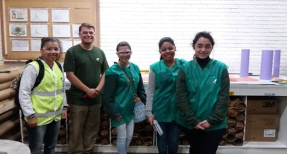

Setor de artes é o que desenvolve os desenhos das embalagens.
Processo:
O processo começa pelo setor de vendas, o vendedor vende a sacaria para o cliente, o cliente geralmente tem uma amostra de como ele quer a arte na embalagem. Depois disso, a Klabin faz a arte no padrão Klabin parecida com a amostra do cliente. A partir do momento que ficou pronto a arte, é enviada para o cliente para ver se aprova.
- Se aprovado o processo vai para PCP e depois para o setor de artes
- Então é feito o tratamento da imagem, onde cada imagem é feita em cromia a partir de quatro cores: (Ciano, Magenta, Amarelo e Preto) sendo desenvolvido no computador onde existe um programa próprio.
- Cada cor se monta através de uma placa (carimbo).
- Próximo passo, o clichê passa pelo banho de luz;
- Depois pelo setor de montagem;
- E por fim a impressão.
Grupo responsável:

Amanda de Oliveira Pereira,
Danielle Aparecida Tavares Moreira,
Diuli da Silva Vieira e
Thayse Sell de Souza